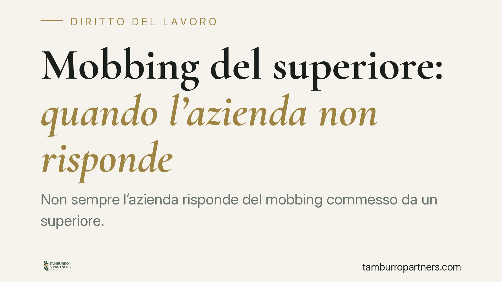

Mobbing del superiore: quando l'azienda non risponde
Non sempre l'azienda risponde del mobbing commesso da un superiore. Quando le vessazioni perseguono un interesse privato del dirigente e il datore ha vigilato adottando misure di tutela, la responsabilità contrattuale può essere esclusa: a rispondere resta il solo autore, in via extracontrattuale. Una distinzione che sposta l'onere della prova e cambia la strategia processuale del lavoratore.

Il caso e la questione
Un lavoratore subisce condotte vessatorie da un proprio superiore gerarchico e agisce per il risarcimento. La domanda ricorrente è: paga l'azienda o paga solo chi ha materialmente vessato?
La risposta non è automatica. Dipende dalla finalità delle condotte e da come il datore di lavoro si è comportato una volta venuto a conoscenza dei fatti.
Cos'è il mobbing: i presupposti
Prima di distribuire responsabilità occorre stabilire se c'è mobbing. La giurisprudenza di legittimità richiede più elementi convergenti (parametri da verificare nel caso concreto):
- una pluralità di condotte ostili, non un episodio isolato;
- la loro sistematicità e durata nel tempo;
- un intento persecutorio, cioè il disegno unitario di emarginare o svilire il lavoratore;
- un danno effettivo alla salute o alla personalità della vittima;
- il nesso causale tra le condotte e il danno.
Senza questi presupposti si potrà discutere di singoli illeciti o di demansionamento, ma non di mobbing in senso tecnico.
Inquadramento normativo: due binari di responsabilità
Il datore di lavoro risponde in via contrattuale ai sensi dell'art. 2087 c.c., che gli impone di adottare le misure necessarie a tutelare l'integrità fisica e la personalità morale dei prestatori. Se il datore non impedisce le vessazioni pur potendo, viola questo obbligo di protezione.
L'autore materiale delle condotte, invece, risponde in via extracontrattuale ai sensi dell'art. 2043 c.c., perché tra il dirigente-mobber e il collega vittima non corre un rapporto contrattuale diretto: c'è la violazione del generale divieto di arrecare danno ingiusto.
La distinzione non è formale. Determina chi paga e, soprattutto, chi deve provare cosa.
Perché la finalità conta
Il punto decisivo è la natura dell'interesse perseguito dal superiore.
Se le vessazioni sono l'espressione distorta di un fine aziendale — ad esempio spingere il lavoratore alle dimissioni per ridurre l'organico — la condotta si inserisce nell'organizzazione dell'impresa e il datore ne risponde ex art. 2087 c.c.
Se invece il superiore agisce per un interesse personale ed egoistico (rivalità, antipatia, vendetta privata), del tutto estraneo alle esigenze produttive, la catena tra condotta e organizzazione datoriale si spezza. In questi casi, secondo un orientamento della giurisprudenza di legittimità (da verificare nel singolo caso), il datore che abbia vigilato e adottato misure a tutela della vittima non risponde in via contrattuale: a rispondere è il solo dirigente, ex art. 2043 c.c.
L'onere della prova cambia con il titolo
È qui che la qualificazione produce conseguenze concrete.
Nell'azione contrattuale contro il datore (art. 2087 c.c.) il lavoratore deve provare la condotta lesiva, il danno e il nesso causale; spetta poi al datore dimostrare di aver adottato tutte le misure idonee a prevenire il pregiudizio.
Nell'azione extracontrattuale contro il dirigente (art. 2043 c.c.) l'onere è più gravoso per la vittima, che deve provare anche l'elemento soggettivo — dolo o colpa — dell'autore.
Sbagliare il titolo dell'azione, o convenire il solo datore quando la responsabilità è del singolo, espone al rigetto della domanda.
Cosa fare in concreto
Se sei il lavoratore vittima:
- Documenta sistematicamente le condotte: date, contenuti, testimoni, comunicazioni. La pluralità e la continuità sono elementi costitutivi del mobbing.
- Ricostruisci la finalità delle vessazioni: capire se rispondono a una logica aziendale o a un rancore personale orienta la scelta del convenuto e del titolo di responsabilità.
- Acquisisci prova del danno alla salute con documentazione medica tempestiva, utile a fondare il nesso causale.
- La qualificazione della responsabilità e la ripartizione dell'onere probatorio andrebbero definite prima di avviare l'azione, per evitare esiti processuali sfavorevoli.
Se sei il datore di lavoro:
- Attiva e traccia i canali di segnalazione e intervieni con misure concrete (verifica, spostamento, provvedimenti disciplinari) appena emergono segnali di vessazione: la prova della vigilanza è la principale linea difensiva ex art. 2087 c.c.
- Conserva la documentazione delle misure adottate: la responsabilità contrattuale si esclude dimostrando la diligenza organizzativa.
---
Contributo informativo a cura di Tamburro & Partners Avvocati - Avv. Giuseppe Tamburro. Non costituisce parere legale.
Ogni storia di lavoro ha i suoi tempi.
Se gestisci HR e vuoi un confronto su contenzioso, ispezioni o licenziamenti, scrivi allo studio. Ti rispondiamo entro un giorno lavorativo.